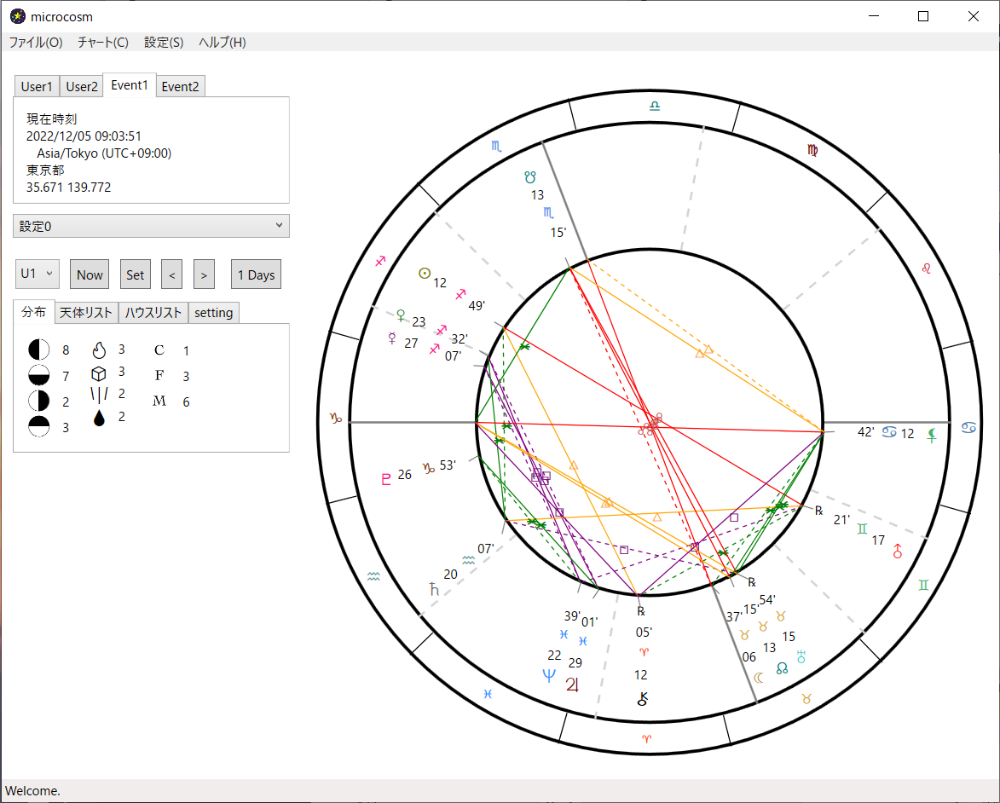
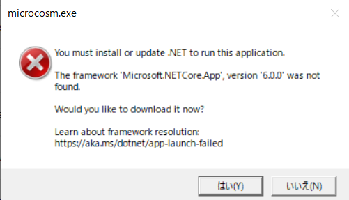

microcosmは、色々な占星術ソフトの特徴を組み合わせたハイブリッド占星術ソフトです。
初心者からある程度の経験者、他占星術ソフトからの移行を考えている人など幅広くおすすめです。
ハイブリッド占星術ソフト
microcosm

はじめに
特徴
Windows/Mac両対応
Windows版・Mac版両方作成しているので、どちらのOSでも使用可能です。また、ストアからの配布なのでインストールできないといった心配点はありません。
オープンソース
ソースは公開されているので、フォークして機能を追加することも可能です。
他ソフトの便利な機能
Ｓtargazerのショートカット機能、Amateruのマウスオーバーなど他ソフトの機能が混ぜ合わさっています。
スクリーンショット

よくある質問
- ブログや講座で使っても良いですか？
- はい、自由にお使いください。
- 対応OSを教えて下さい。
-
Windows: windows10以降、.net6.0ランタイムが必要
Mac: os11以降 - ライセンスを教えて下さい。
- AGPL 3.0です。
ダウンロード
正式版


下記画面が出た場合

このソフトは.netというツール上で動作するため、.netのインストールが必要です。
「はい」を押すとダウンロードが始まりますので、インストール後ご利用ください。
「はい」を押すとダウンロードが始まりますので、インストール後ご利用ください。